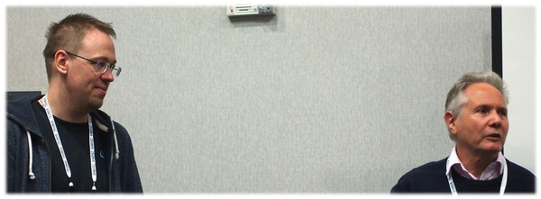
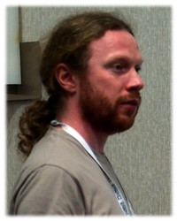

Two transparent huge page cache implementations
One of the contenders is Kirill Shutemov's THP-enabled tmpfs patch set. Kirill's work is based on compound pages, a fairly elaborate mechanism for binding individual memory pages into a single, larger page. The other solution is the team-pages patch set from Hugh Dickins. A "team page" can be thought of as a new, arguably lighter-weight way of grouping pages together. Hugh's work has the advantage of having been deployed in production at Google for over a year; that gives developers a relatively high level of confidence that it lacks obscure bugs — always a nice feature in memory-management patches. Even so, it became clear, the choice between the two is far from straightforward.
Differing objectives
Kirill started off by saying that one of his primary goals was the ability for applications to access individual 4KB subpages of a huge page without the need to split the huge page itself. The current anonymous THP implementation does not have that property, but the ability to access smaller subpages is more important in the page-cache setting. Hugh, instead, was more focused on getting things working quickly, meaning that a less intrusive (but not necessarily smaller) implementation was required. Compound pages, he said, are hard to manipulate; they also force a deeper level of integration with various subsystems, including memory control groups, that he would rather avoid. There was some back-and-forth on whether compound pages are truly more complex than team pages, but without anything conclusions being reached.
Both implementations currently work with the tmpfs filesystem, which is a start, but a proper transparent huge page cache implementation needs to work with "real" filesystems as well. Kirill stated that he is working on that objective which, he asserted, will be more easily achieved with compound pages than with the team-pages approach, which is known to be incompatible with ext4 in its current form.

There was some discussion of how smaller files are handled. Team pages are assembled from individual pages, and, thus, should deal with small files reasonably well. A huge page will be allocated (memory availability allowing) at the beginning, but isn't fully charged against the allocating process. If need be, the huge page can be split to return memory to the system. Compound pages seemingly have worse small-file performance at the moment, allocating and charging a huge page from the outset. That has led to some testers reporting out-of-space errors with this patch set.
Andrea Arcangeli, the original author of the THP feature, thought that people were worrying too much about the small-file issue. He said that THP should be seen purely as a performance optimization. Anybody who is concerned about whether huge pages are using too much memory should simply not enable the feature.
Sticking points
Hugh made the assertion that the choice was between one implementation that is working, running on thousands of machines, and popular with its users and another that, he said, is "getting there." The team-pages code, he said, is ready to go in, with the possible exception of review of the ABI aspects — mount options, sysfs features, etc. It quickly became clear that there was no consensus for that in the room, though.
One of the key sticking points first came up at this time. The current THP code uses compound pages; Kirill's work is an extension of that approach. The team-pages mechanism is, instead, entirely new. If it is merged, the kernel will be using different techniques for anonymous and page-cache huge pages, essentially doubling (or worse) the amount of code that must be maintained going forward. Vlastimil Babka asked whether Hugh's patches could be converted to use compound pages; Hugh said that might be possible, but he would rather merge what he has now, then let Kirill do the conversion later if he is interested in doing it.
Another issue is "recovery" — substituting a huge page for a set of small pages at some future time if, for whatever reason, a huge page is not allocated at the outset. Team pages seem to have fewer problems with recovery, especially in the case of small files that grow, since the underlying huge page is allocated at the outset if possible. Failing that, either approach needs to run work in the background to coalesce ("collapse") sets of small pages into huge pages. The team-pages patches currently lack such a mechanism; compound pages appear to be in better shape in that regard.
There was some discussion of details — whether the work should be done in the khugepaged thread or in work queues in the context of the processes owning the pages — but that was peripheral to the main issue. As Mel Gorman put it, this question doesn't affect the decision that was being discussed.
Mel went on to complain that the purpose of the session was to choose between the two implementations, and that the group seemed no closer to that objective. This question has implications beyond just THP; he noted that the team-pages patches are currently in Andrew Morton's -mm tree. They are creating conflicts with other patches, notably his own node-accounting patches. If we are not merging team pages for 4.7, he said, those patches should not be in -mm (and, thus, in linux-next) at this time. Hugh said he really wanted the patches to get some exposure and testing, but that they could be backed out for now if need be.
Kirill said that there is no reason to rush the team-pages patches into the kernel now, just to add compound pages later. That, he said, would just add a bunch of churn. But, Hugh said, it would also give Linux users the opportunity to benefit from this work now, to which Kirill responded that Hugh had held on to the patch set for a year, so there should be no urgency now. The team-pages patches are ready, and have been for six months or so, Hugh said; he went on to say that, while Kirill has done well with the compound-page work, he (Hugh) doesn't know how long it will be until he is confident in that work.
Setting requirements
At about this point, Mel went to the front of the room in an attempt to focus the group and get a decision made. Using the flip chart, he started a list of requirements each approach would have to meet before the room — including the competing developer — would accept it into the mainline. It took a while, but some clear requirements did result.
On the compound-pages side, small files must not waste memory. Mel noted
that, when the PowerPC architecture went to a 64KB native page size, the
amount of memory required to run a basic system quadrupled. Andrea

Hugh also suggested that compound pages need to demonstrate a high level of robustness before it could be considered. This requirement was seen as being somewhat unfair, though: it is easy to show a lack of robustness, but difficult to show its presence. In the end, it will be incumbent on Hugh to show which robustness problems, if any, exist in the compound-pages implementation.
One of the requirements for team pages is similar: it has to have a recovery mechanism for files that didn't get huge pages assigned initially. In particular, khugepaged or something like it must be able to collapse pages when appropriate.
The harder requirement, though, is to move away from having independent mechanisms for anonymous and page-cache pages. If the team pages approach is to be adopted, there must be a plausible commitment to implement team pages for anonymous pages as well. If, once the implementation is in place, it is shown (in the form of performance problems, for example) that the problems are sufficiently different that two approaches are necessary, the two can remain separate. But until such a thing has been conclusively demonstrated, the goal needs to be a single approach for both cases. There is a lot of concern about excessive complexity in the memory-management code; few people want to add to it.
Finally, the current incompatibility between team pages and non-tmpfs filesystems (the ext4 filesystem in particular) needs to be resolved. In practice that means that team pages must stop using the PagePrivate flag, since ext4 (along with other filesystems) is already using it.
The session concluded with both Kirill and Hugh agreeing that, if the other
developer's system met the requirements, they would not block its merging.
Hugh also agreed that team pages would come out of the -mm tree for now,
since it is not destined for merging in 4.7. What will be merged in
subsequent cycles remains to be seen; it would not be entirely surprising
if it were a topic of discussion again at LSFMM 2017.
| Index entries for this article | |
|---|---|
| Kernel | Huge pages |
| Kernel | Memory management/Huge pages |
| Conference | Storage, Filesystem, and Memory-Management Summit/2016 |